Simple api
effector requires:
- a dataset, normally the test set
- a Machine Learning model
- (optionally) the jacobian of the black-box model
Then pick a global (1) or regional (2) Effect Method, to explain the ML model.
-

effectorprovides five global effect methods: -
effectorprovides five regional effect methods:
Dataset
A dataset, typically the test set
Must be a np.ndarray with shape (N, D).
Ν = 100
D = 2
X_test = np.random.uniform(-1, 1, (N, D))
from ucimlrepo import fetch_ucirepo
# fetch dataset
bike_sharing_dataset = fetch_ucirepo(id=275)
# data (as pandas dataframes)
X = bike_sharing_dataset.data.features
y = bike_sharing_dataset.data.targets
# split data
X_train, X_test, y_train, y_test = train_test_split(X, y, test_size=0.2)
ML model
A trained black-box model
Must be a Callable with signature X: np.ndarray[N, D]) -> np.ndarray[N].
def predict(x):
'''y = 10*x[0] if x[1] > 0 else -10*x[0] + noise'''
y = np.zeros(x.shape[0]) options:
force_inspection: true
allow_inspection: true
ind = x[:, 1] > 0
y[ind] = 10*x[ind, 0]
y[~ind] = -10*x[~ind, 0]
return y + np.random.normal(0, 1, x.shape[0])
If you have a sklearn model, use model.predict.
# X = ... (the training data)
# y = ... (the training labels)
# model = sklearn.ensemble.RandomForestRegressor().fit(X, y)
def predict(x):
return model.predict(x)
If you have a tensorflow model, use model.predict.
# X = ... (the training data)
# y = ... (the training labels)
# model = ... (a keras model, e.g., keras.Sequential)
def predict(x):
return model.predict(x)
If you have a pytorch model, use model.forward.
# X = ... (the training data)
# y = ... (the training labels)
# model = ... (a pytorch model, e.g., torch.nn.Sequential)
def predict(x):
return model.forward(x).detach().numpy()
Jacobian (optional)
Optional: The jacobian of the model's output w.r.t. the input
Must be a Callable with signature X: np.ndarray[N, D]) -> np.ndarray[N, D].
It is not required, but for some methods (RHALE and DerPDP), it accelerates the computation.
def jacobian(x):
'''dy/dx = 10 if x[1] > 0 else -10'''
y = np.zeros_like(x)
ind = x[:, 1] > 0
y[ind, 0] = 10
y[~ind, 0] = -10
return y
Not available.
# X = ... (the training data)
# y = ... (the training labels)
# model = ... (a keras model, e.g., keras.Sequential)
def jacobian(x):
with tf.GradientTape() as tape:
tape.watch(x)
y = model(x)
return tape.jacobian(y, x)
# X = ... (the training data)
# y = ... (the training labels)
# model = ... (a pytorch model, e.g., torch.nn.Sequential)
def jacobian(x):
x = torch.tensor(x, requires_grad=True)
y = model(x)
y.backward(torch.eye(y.shape[0]))
return x.grad.numpy()
Global Effect
Global effect: how each feature affects the model's output globally, averaged over all instances.
All effector global effect methods have the same API.
They all share three main functions:
- `.plot()`: visualizes the global effect
- `.eval()`: evaluates the global effect at a grid of points
- `.fit()`: allows for customizing the global method
.plot()
.plot() is the most common method, as it visualizes the global effect.
For example, to plot the effect of the first feature of the synthetic dataset, use:
pdp = effector.PDP(data=X, model=predict)
pdp.plot(0)
{kind=link}
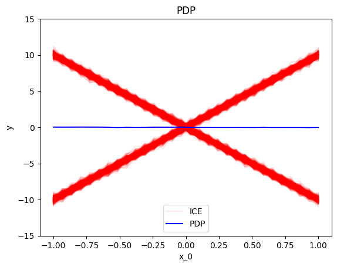
rhale = effector.RHALE(data=X, model=predict, model_jac=jacobian)
rhale.plot(0)
{kind=link}
shap_dp = effector.ShapDP(data=X, model=predict)
shap_dp.plot(0)
{kind=link}
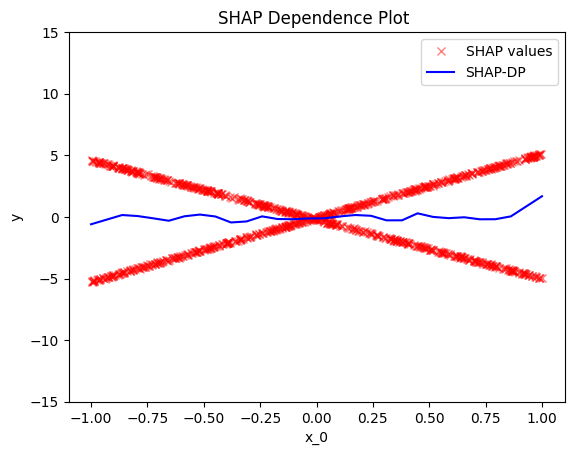
ale = effector.ALE(data=X, model=predict)
ale.plot(0)
{kind=link}
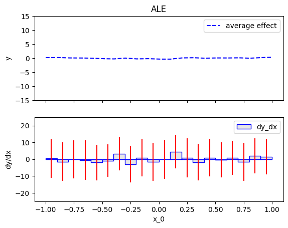
d_pdp = effector.DerPDP(data=X, model=predict, model_jac=jacobian)
d_pdp.plot(0)
{kind=link}
Some important arguments of .plot()
-
heterogeneity: whether to plot the heterogeneity of the global effect. The following options are available:- If
heterogeneityisTrue, the heterogeneity is plot as a standard deviation around the global effect. - If
heterogeneityisFalse, the global effect is plotted. - If
heterogeneityis a string:"ice"forpdpplots"shap_values"forshap_dpplots
- If
-
centering: whether to center the regional effect. The following options are available:- If
centeringisFalse, the regional effect is not centered - If
centeringisTrueorzero_integral, the regional effect is centered around the y axis. - If
centeringiszero_start, the regional effect starts fromy=0
- If
.eval()
.eval() evaluates the global effect at a grid of points.
pdp = effector.PDP(data=X, model=predict)
y = pdp.eval(0, xs=np.linspace(-1, 1, 100))
y_mu, y_sigma = pdp.eval(0, xs=np.linspace(-1, 1, 100), heterogeneity=True)
rhale = effector.RHALE(data=X, model=predict, model_jac=jacobian)
y = rhale.eval(0, xs=np.linspace(-1, 1, 100))
y_mu, y_sigma = rhale.eval(0, xs=np.linspace(-1, 1, 100), heterogeneity=True)
shap_dp = effector.ShapDP(data=X, model=predict)
y = shap_dp.eval(0, xs=np.linspace(-1, 1, 100))
y_mu, y_sigma = shap_dp.eval(0, xs=np.linspace(-1, 1, 100), heterogeneity=True)
ale = effector.ALE(data=X, model=predict)
y = ale.eval(0, xs=np.linspace(-1, 1, 100))
y_mu, y_sigma = ale.eval(0, xs=np.linspace(-1, 1, 100), heterogeneity=True)
d_pdp = effector.DerPDP(data=X, model=predict, model_jac=jacobian)
y = d_pdp.eval(0, xs=np.linspace(-1, 1, 100))
y_mu, y_sigma = d_pdp.eval(0, xs=np.linspace(-1, 1, 100), heterogeneity=True)
.fit()
If you want to customize the global effect, use .fit() before .plot() or .eval().
Check this tutorial for more details.
global_effect = effector.<method_name>(data=X, model=predict)
# customize the global effect
global_effect.fit(features=[...], **kwargs)
global_effect.plot(0)
global_effect.eval(0, xs=np.linspace(-1, 1, 100))
Regional Effect
Regional Effect: How each feature affects the model's output regionally, averaged over instances inside a subregion.
Sometimes, global effects are very heterogeneous (local effects deviate from the global effect). They all share three main functions:
- `.summary()`: provides a summary of the regional effect
- `.plot()`: visualizes the global effect
- `.eval()`: evaluates the global effect at a grid of points
- `.fit()`: allows for customizing the global method
.summary()
summary() is the first step in understanding the regional effect.
Behind the scenes, it searches for a partitioning of the feature space into meaningful subregions (1)
and outputs what if any has been found.
Users should check the summary before plotting or evaluating the regional effect.
To plot or evaluate a specific regional effect, they can use the node index node_idx from the partition tree.
- meaningful in this context means that the regional effects in the respective subregions have lower heterogeneity than the global effect.
r_pdp = effector.RegionalPDP(data=X, model=predict)
r_pdp.summary(0)
Feature 0 - Full partition tree:
Node id: 0, name: x_0, heter: 34.79 || nof_instances: 1000 || weight: 1.00
Node id: 1, name: x_0 | x_1 <= 0.0, heter: 0.09 || nof_instances: 1000 || weight: 1.00
Node id: 2, name: x_0 | x_1 > 0.0, heter: 0.09 || nof_instances: 1000 || weight: 1.00
--------------------------------------------------
Feature 0 - Statistics per tree level:
Level 0, heter: 34.79
Level 1, heter: 0.18 || heter drop : 34.61 (units), 99.48% (pcg)
r_rhale = effector.RegionalRHALE(data=X, model=predict, model_jac=jacobian)
r_rhale.summary(0)
Feature 0 - Full partition tree:
Node id: 0, name: x_0, heter: 93.45 || nof_instances: 1000 || weight: 1.00
Node id: 1, name: x_0 | x_1 <= 0.0, heter: 0.00 || nof_instances: 1000 || weight: 1.00
Node id: 2, name: x_0 | x_1 > 0.0, heter: 0.00 || nof_instances: 1000 || weight: 1.00
--------------------------------------------------
Feature 0 - Statistics per tree level:
Level 0, heter: 93.45
Level 1, heter: 0.00 || heter drop : 93.45 (units), 100.00% (pcg)
r_shap_dp = effector.RegionalShapDP(data=X, model=predict)
r_shap_dp.summary(0)
Feature 0 - Full partition tree:
Node id: 0, name: x_0, heter: 8.33 || nof_instances: 1000 || weight: 1.00
Node id: 1, name: x_0 | x_1 <= 0.0, heter: 0.00 || nof_instances: 1000 || weight: 1.00
Node id: 2, name: x_0 | x_1 > 0.0, heter: 0.00 || nof_instances: 1000 || weight: 1.00
--------------------------------------------------
Feature 0 - Statistics per tree level:
Level 0, heter: 8.33
Level 1, heter: 0.00 || heter drop : 8.33 (units), 99.94% (pcg)
r_ale = effector.RegionalALE(data=X, model=predict)
r_ale.summary(0)
Feature 0 - Full partition tree:
Node id: 0, name: x_0, heter: 114.57 || nof_instances: 1000 || weight: 1.00
Node id: 1, name: x_0 | x_1 <= 0.0, heter: 16.48 || nof_instances: 1000 || weight: 1.00
Node id: 2, name: x_0 | x_1 > 0.0, heter: 17.41 || nof_instances: 1000 || weight: 1.00
--------------------------------------------------
Feature 0 - Statistics per tree level:
Level 0, heter: 114.57
Level 1, heter: 33.89 || heter drop : 80.68 (units), 70.42% (pcg)
r_der_pdp = effector.DerPDP(data=X, model=predict, model_jac=jacobian)
r_der_pdp.summary(0)
Feature 0 - Full partition tree:
Node id: 0, name: x_0, heter: 100.00 || nof_instances: 1000 || weight: 1.00
Node id: 1, name: x_0 | x_1 <= 0.0, heter: 0.00 || nof_instances: 1000 || weight: 1.00
Node id: 2, name: x_0 | x_1 > 0.0, heter: 0.00 || nof_instances: 1000 || weight: 1.00
--------------------------------------------------
Feature 0 - Statistics per tree level:
Level 0, heter: 100.00
Level 1, heter: 0.00 || heter drop : 100.00 (units), 100.00% (pcg)
.plot()
.plot() visualizes the regional effect. Apart from the feature index, it requires the node_idx from the partition tree.
Apart from the added node_idx argument, the API is the same as the global effect.
regional_effect = effector.RegionalPDP(data=X, model=predict)
[regional_effect.plot(0, node_idx) for node_idx in [1, 2]]
node_idx=1: \(x_1\) when \(x_2 \leq 0\) |
node_idx=2: \(x_1\) when \(x_2 > 0\) |
|---|---|
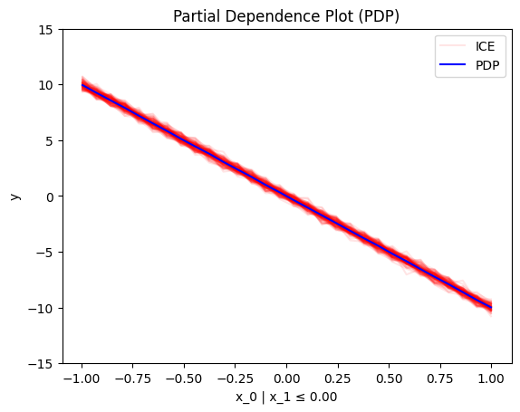 |
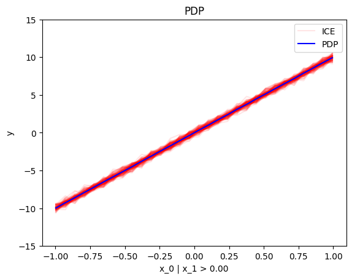 |
{kind=link}
{kind=link}
regional_effect = effector.RegionalRHALE(data=X, model=predict, model_jac=jacobian)
[regional_effect.plot(0, node_idx) for node_idx in [1, 2]]
node_idx=1: \(x_1\) when \(x_2 \leq 0\) |
node_idx=2: \(x_1\) when \(x_2 > 0\) |
|---|---|
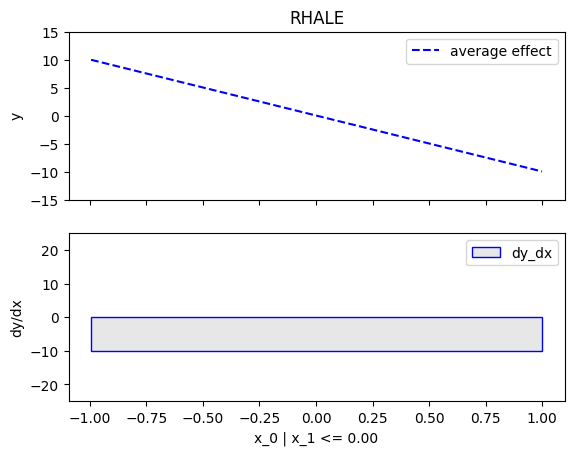 |
 |
{kind=link}
regional_effect = effector.RegionalShapDP(data=X, model=predict)
[regional_effect.plot(0, node_idx) for node_idx in [1, 2]]
node_idx=1: \(x_1\) when \(x_2 \leq 0\) |
node_idx=2: \(x_1\) when \(x_2 > 0\) |
|---|---|
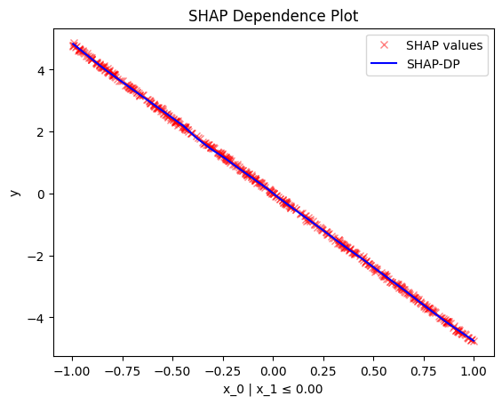 |
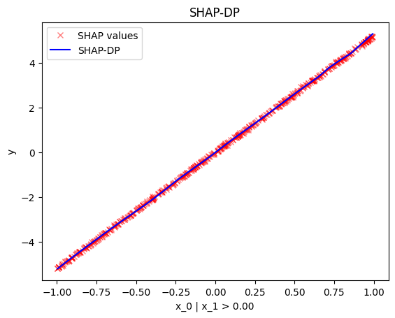 |
{kind=link}
{kind=link}
regional_effect = effector.RegionalALE(data=X, model=predict)
[regional_effect.plot(0, node_idx) for node_idx in [1, 2]]
node_idx=1: \(x_1\) when \(x_2 \leq 0\) |
node_idx=2: \(x_1\) when \(x_2 > 0\) |
|---|---|
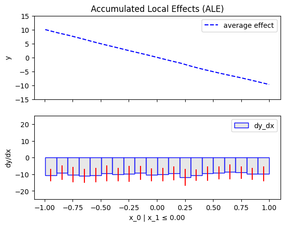 |
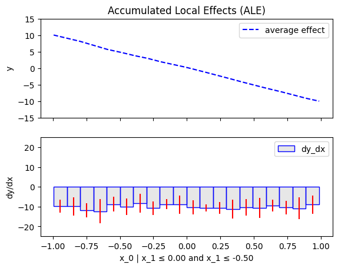 |
{kind=link}
{kind=link}
regional_effect = effector.DerPDP(data=X, model=predict, model_jac=jacobian)
[regional_effect.plot(0, node_idx) for node_idx in [1, 2]]
node_idx=1: \(x_1\) when \(x_2 \leq 0\) |
node_idx=2: \(x_1\) when \(x_2 > 0\) |
|---|---|
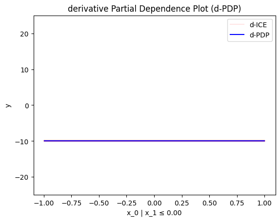 |
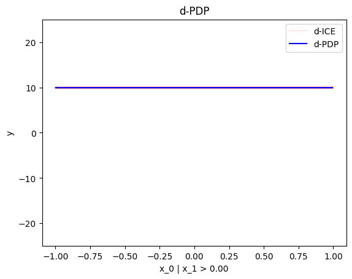 |
{kind=link}
{kind=link}
.eval()
.eval() evaluates the regional effect at a grid of points.
regional_effect = effector.RegionalPDP(data=X, model=predict)
y = regional_effect.eval(0, node_idx=1, xs=np.linspace(-1, 1, 100))
y_mu, y_sigma = regional_effect.eval(0, node_idx=1, xs=np.linspace(-1, 1, 100), heterogeneity=True)
regional_effect = effector.RegionalRHALE(data=X, model=predict, model_jac=jacobian)
y = regional_effect.eval(0, node_idx=1, xs=np.linspace(-1, 1, 100))
y_mu, y_sigma = regional_effect.eval(0, node_idx=1, xs=np.linspace(-1, 1, 100), heterogeneity=True)
regional_effect = effector.RegionalShapDP(data=X, model=predict)
y = regional_effect.eval(0, node_idx=1, xs=np.linspace(-1, 1, 100))
y_mu, y_sigma = regional_effect.eval(0, node_idx=1, xs=np.linspace(-1, 1, 100), heterogeneity=True)
regional_effect = effector.RegionalALE(data=X, model=predict)
y = regional_effect.eval(0, node_idx=1, xs=np.linspace(-1, 1, 100))
y_mu, y_sigma = regional_effect.eval(0, node_idx=1, xs=np.linspace(-1, 1, 100), heterogeneity=True)
regional_effect = effector.DerPDP(data=X, model=predict, model_jac=jacobian)
y = regional_effect.eval(0, node_idx=1, xs=np.linspace(-1, 1, 100))
y_mu, y_sigma = regional_effect.eval(0, node_idx=1, xs=np.linspace(-1, 1, 100), heterogeneity=True)
.fit()
If you want to customize the regional effect, use .fit() before .summary(), .plot() or .eval().
Check this tutorial for more details.
In general, the most important argument is space_partitioning, which controls the method that partitions the feature space.
regional_effect = effector.<method_name>(data=X, model=predict)
# customize the regional effect
space_partitioning = effector.space_partitioning.Greedy(max_depth=2)
regional_effect.fit(features=[...], space_partitioning=space_partitioning, **kwargs)
regional_effect.summary(0)
regional_effect.plot(0, node_idx=1)
regional_effect.eval(0, node_idx=1, xs=np.linspace(-1, 1, 100))